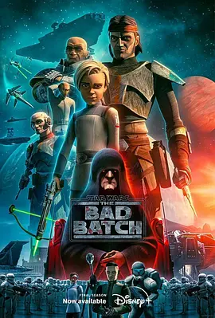

8.7
星球大战：异等小队 第三季
Star Wars: The Bad Batch Season 3
2024
美国
评分 8.7
导演:
戴夫·菲洛尼
演员:
迪·布莱德利·贝克 / 米歇尔·洪 / 凯莎·卡斯特-休伊斯 / 吉米·辛普森 / 诺希尔·达拉尔
类型:
冒险,剧情,动作
剧情简介
在最终季中，“异等小队”已被逼到银河的边缘，过往的选择与伤痕在队伍间沉淀成一种无声的重量。帝国的压迫全面升级，追踪与围剿愈发严密，而小队成员仍在坚持寻找失散同伴、揭开秘密实验的真相，并试图将欧米伽从身不由己的命运中解救出来。故事以更凝缩的节奏推进，每一段旅程都像是把过去三季的累积逐步推向终点。欧米伽的成长成为本季的重要核心，她摆脱了单纯依赖队伍的状态，逐渐学会独立判断与承担风险，也在面对恐惧时展现出令成员意想不到的坚韧。猎手、爆破、回声与砰砰在行动中再次体会到家族般的牵绊，他们之间的互动在危机之下显得更加真挚，也更加沉重。队伍不得不面对的是：并非所有人都能从战火中完整归来，而并非所有正义都能在银河里立即得到回应。帝国的阴谋范围扩大，从克隆人计划延伸至更为深层的控制企图。小队在追查中进入废弃设施、秘密实验点和难民星球，见证无数在新秩序下无法喘息的生命。他们的对抗不再只是战术冲突，而是对存在意义的坚持。最终季以强烈的情绪张力收束，动作场面依旧凌厉，但人物的选择与牺牲成为真正推动故事的力量。作为收官篇，本季让“异等小队”的旅程画出完整弧线：他们从被系统定义的“瑕疵品”，成长为能影响银河命运的一支不可替代的队伍。无论局势多么黑暗，他们仍选择并肩向前，以最后的行动回应那些被遗忘的声音。